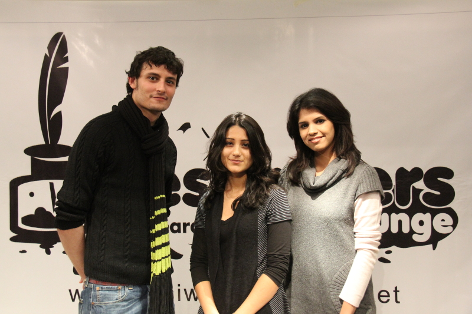

August 26, 2011
SPECIAL FEATURE ON LOCAL LITERATURE
'Papercuts' rekindles joie de lire*
The biannual e-zine of Desi Writers Lounge is a treasure-trove
Three of the DWL founding members (L to R) Osman Khalid Butt, Shehla Wynne and Ayesha Sajid at the Papercuts pre-launch ceremony. © Hassan Shah Gilani @ Kuch Khaas
Marquise de Sévigné, a French noblewoman known mostly for her letters sent to her daughter, once wrote, "When I step into this library, I cannot understand why I ever step out of it." That's how I feel about Papercuts, a biannual e-zine (online magazine) published by the Desi Writers Lounge (DWL) at desiwriterslounge.net; when I enter the world of Papercuts and start reading wonderful prose and poetry by talented writers across the globe, I can't understand why I ever stop. I talked with Papercuts' Afia Aslam, Shehla Wynne, Waqas Naeem, Noorulain Noor and Osman Khalid Butt who fondly recounted to me their individual experiences with DWL.
IN THE BEGINNING THERE WAS DW
Sana Sabir, a young woman based in Lahore who was interested in bringing together South Asians on a common-interest writing forum, created a community (group) called Desi Writers (DW) on orkut, a social networking website, in 2004. By next year, DW wasn't just a place to display one's writing talent, but it had developed a pretty solid workshopping role. Not everyone on DW knew one another before joining the community; most of them had met for the first time on orkut. The members responded constructively to each others' work and it was realised that that was something worth taking forward. There was also a beautiful synergy among the active members of the community. It was apparent that something special could be made to happen there together, as a team.
MOVING FORWARD TO DWL
There's always karma at work in this project. It's because of the selfless vision on which its foundation was laid. The orkut community smacked of potential, but it couldn't grow in the right direction on such a public platform. It needed its own independent space with proper moderation, filtered memberships and a greater focus on quality writing. It needed room to come into its own; hence, the DWL website was meant to happen. A handful of DW members launched the DWL website in April 2005. They had considered changing the name 'Desi Writers' to something else before starting the independent website, but they realised that 'Desi Writers' had become too much a part of their identity -- and day. They couldn't imagine calling it anything else. The only reason 'Lounge' was added on was because the 'desiwriters' domain name was already taken. The founding members pooled money to buy the domain, pay for web development and so on. There was never the question of being paid back or of earning anything from the community. They all just believed in it.
THE DWL FORUMS
The DWL writing workshop, titled 'DWL forums', is divided into eight sections: the 'Welcome to DWL' section is used to inform new members about the rules, introduce them to the existing members, make DWL announcements and mention the organisation's achievements. One section has archives of the work from the orkut days, whereas 'Resource Central' is for members to discuss the books they are reading, dissect classic works and share tips about improving writing skills. DWL events are coordinated, meet-ups planned and general discussions conducted in the 'When you're not writing' section. The 'Where the going's easy' and 'Workshop' sections are where the members can post poetry, prose, journalistic pieces and scripts/screenplays for critique; the former section is meant to encourage writers, whereas they receive critical and technical critique in the latter. There are two more sections: one for posting unfinished pieces writers aren't sure about, and the other, called 'Our Columns', for members to post journal entries, take part in a two-minute post-writing exercise or simply vent their feelings.
PAPERCUTS
The Papercuts of today had the uninspiring title of 'the e-zine' seven volumes ago. It started as a quarterly effort to showcase some of the best work being put up on the DWL forums. Eventually, it was rolled back to a biannual publication to rationalise the amount of time the editors were volunteering for it. It was never advertised or promoted until last year when they decided to take it big. That's when it was christened 'Papercuts' by the DWL community through a poll conducted on the forums. The current volume of Papercuts is a far cry from where the publication had started out, and to match its new visibility and quality, they've also expanded its scope and submission base. The magazine features articles, reviews and interviews for the first time, and as of Volume 8, they're accepting submissions from the general public.
AFIA ASLAM
"I think what all of us really loved about DWL was the people we met through it. There were such fascinating personalities in this community, all of them with some interesting history, something different to share, something funny to say. And in getting to know them, DWL unwittingly became our vehicle for finding ourselves, for forging our present and who we wanted to be," Papercuts Editor Afia Aslam said. "It was that process of collective discovery -- of oneself, of others -- that made logging on to the forums so exciting. We were all at a formative period in our lives at that point: some of us studying, others just starting out in the professional world," Afia added. "Under the able leadership of our administrator at the time, Maryam Piracha, DWL grew and matured over the years. We branched into live events like readings, book clubs and game nights. We upped the ante on our e-zine, doing more stringent shortlisting and working harder at editing. It was all something to be proud of and to celebrate," she said. "The downside of this was that the community started losing some of its raw appeal, increasingly becoming a priority unto itself. We found ourselves increasingly caught up in running the place rather than enjoying it. The DWL experience became more about what we were offering to our members rather than about what we were getting out of it," she added. "Then Papercuts happened. For a few years we'd been bringing out this tiny, unknown e-zine that no one cared about, and in 2010, we decided to take it big. The upgraded magazine was going to be so different that it was practically like starting over. The excitement and anticipation this brought into our team was unparalleled. I think that's when, after a long time, we recaptured that initial joie de vivre (joy of living) that used to signify DWL for us," Afia said. "This time, the team was different. We'd lost many people along the way to the sacrificial altar of real life. Three of our founding members had gone on to run magazines of their own, four of us had gotten married, two had become mothers, one had started a PhD, one had started making waves in theatre in Islamabad and so on," she added. "New people were brought on board, and with them came a new sense of energy and fun. If earlier the madness of the DWL experience could be summed up in our rambling team e-mails, then now it could be seen in the interaction of the Papercuts editors while swapping notes and updating each other on how their work was proceeding. After a long time, we got our laugh-out-loud moments back," she said. "As long as we keep appreciating the changing nature of our little project and keep aligning a part of ourselves to it, I think DWL will always be a positive force in our lives in one way or another," she added.
SHEHLA WYNNE
"We all randomly joined a group on orkut, and pretty soon established great rapport within the community. What started as annoyance with the orkut server errors evolved into an idea which, with Maryam Piracha's persistence and CS background, turned into DWL," DWL Administrator and Webmaster/Papercuts Prose Editor Shehla Wynne said. "At that time I was the only active member living in the US, which came in handy when we purchased the web space. I think that was probably the point where DWL became my baby. It felt so great to be a part of this new concept, this haven for writers that had been missing from the lives of South Asian, and especially Pakistani, writers," Shehla added. "Since its inception, I've been actively involved with DWL one way or another. From editing poetry to now editing prose and administrating the forums, I've tried my hand at everything! I also like to think I am the unofficial 'router' of the Papercuts team. I try to keep everyone involved and connected even when we're working on separate aspects of the magazine," she said. "It's nice to look back and see how DWL has grown -- and it has been quite an organic process. The first issue of Papercuts was simply a collection of the good material we had on the orkut community. Since then we have formulated specific selection and editing policies, and recently, after Afia took charge as the Editor, we opened submissions to the public and introduced thematic content," she added. "I think DWL and Papercuts have grown a lot bigger than any of us initially imagined. We have been lucky, and have some great additions to the original team who are all very committed to this project," Shehla said. "What I love the most about DWL are the relationships the members have formed outside the forums. It's rather amazing that we were all strangers not too many years ago. Now we're a strong network of colleagues and friends, in some cases with little in common aside from our love for the written word," she added.
WAQAS NAEEM
Papercuts Associate Prose Editor Waqas Naeem wasn't a part of the DW community on orkut. He joined the DWL forums in October 2009 when he had stumbled upon the website while searching for details on a short story competition. "I used to write poems back when I joined DWL -- still do somewhat -- and some of the pieces I posted in the poetry sections received good comments. Most of all, I was impressed by the way some of the senior members critiqued the individual posts on the forums," Waqas said. "Prior to joining DWL, I had posted some of my work on amateur poetry websites and orkut communities, but the critique in those communities was mostly oriented toward 'mutual admiration'. I found the criticism on DWL to be formative, in-depth and technical," he said. "The people who started this venture, some of whom are still associated with DWL as administrators or contributors, are extremely talented writers. So, the forums come across as a very authentic and credible writing workshop," he added.
NOORULAIN NOOR
Papercuts Poetry Editor Noorulain Noor was also not a part of the orkut group at all. She joined DWL in 2007. "At that time, DWL was just what I needed. It was the perfect platform for me to give feedback to my peers and also receive critique on my own work. Since I was taking poetry classes in college around the time I joined DWL, I naturally gravitated towards the poetry boards," Noorulain said. "Pretty soon, I was a regular on DWL, and members were seeking me out for one-on-one critique on their poems. At the same time, I was receiving valuable feedback on my own work. Soon after, I was approached by Maryam Piracha, the then editor of Papercuts, to join DWL as a moderator and Poetry Editor," she said. "I had already established strong ties with DWL. To this day, I remain deeply committed to DWL and our members. I am looking forward to a time when we shall see Papercuts in print," she added. "Since joining DWL, I have taken over the organisation of the poetry boards and have established the DWL resource board, which features helpful exercises for writers, publication avenues, and a variety of poetry and prose, so the members can interact and engage in discussion," Noorulain said. "What's unique about DWL is that all of us -- members, moderators and editors -- develop friendships and ties in this community and connect through our craft. For many of us, DWL is a home away from home," she added.
OSMAN KHALID BUTT
Papercuts Poetry Editor and Creative Lead Osman Khalid Butt has been with DWL from its initial orkut days. He created the first 'topic' titled 'Poetry', with a submission of his own poem to set the ball rolling. It received feedback, and then other members of the community started posting their pieces. "I've practically grown up with the group and the website," Osman said. "Alongside the other core team members and co-founders, I saw great potential in the content that was being posted on the group, which is why we decided to take the group to the next level: the website. From then on, it's been an insane process of commenting, posting, critiquing -- poetry, that's my forte -- assuming the title of Poetry Editor, moderating comments, and working towards bringing out every issue of our biannual e-zine," he said. "I'm extremely proud of how far we've come, and how we're slowly but surely creating a niche for ourselves, all the while promoting the new South Asian writer," he added.
CONCLUSION
"We are still in transition, there's no doubt about it. There are new personalities to negotiate, new relationships to be forged and sustained, new goals to be achieved, and new challenges looming ahead. All of this cannot be done without ups and downs, without small successes tempered by small failures. Will it all be worth it at the end of the day? I think, yes," the Papercuts editor said.
* joy of reading
First published in Pakistan Today